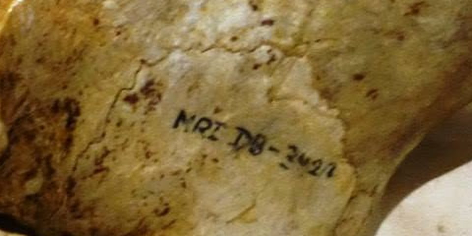
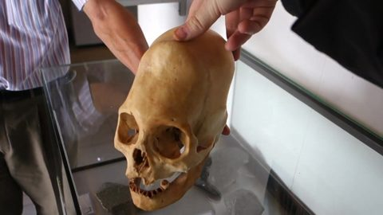
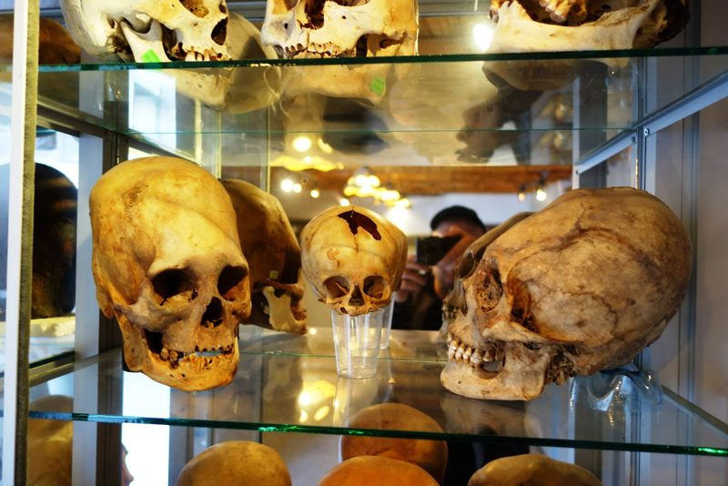

ماذا تخبرنا الجماجم؟

على جانب الجمجمة كُتب MRI DB بالحبر. هل يمكن لبضعة أحرف أن تخبرنا من أين جاءت هذه الجمجمة وأين توجد سجلاتها؟ تتتبّع هذه الصفحة هذا الخيط إلى أبعد ما تسمح به المصادر المفتوحة.

كيف جُمعت المادة
«سافرت إلى كل أنحاء العالم، وها أنا أحمل جمجمة Starchild 2 بين يديّ.»
- بيرو، 1 نوفمبر 2014. صوّر Jani جماجم مستطيلة في متاحف بيرو وفي مجموعة خاصة. الصورتان 01 و03–11 من هذه الزيارة؛ وفي الصورتين 03 و04 يحمل Jani الجمجمة بنفسه. في مقاطع Travel South يتحدث مالك المجموعة عن جماجمه، وتُقدَّم Starchild 2 باسمها، وقد سُمح استثنائيًا بالتصوير في الغرفة الخلفية لأحد المتاحف. أما الصورة 02 فهي تجميع من هذه المقاطع.
- القاهرة، 15 فبراير 2024. صادف في المتحف المصري رؤوسًا حجرية يمتد أعلاها بعيدًا إلى الخلف بالطريقة نفسها.
- الأرشيف 2026. رُوجعت الصور ومقاطع الفيديو والمصادر المفتوحة: أدلة المتاحف وسجلات القطع والدراسات.
ثلاثة أسئلة
- إلى أين يقود الرمز المكتوب على الجمجمة؟ الرمز MRI DB المكتوب بالحبر وسجلات قطع المتحف.
- لماذا تُسمّى هذه Starchild 2؟ الاسم مستعار من جمجمة أشهر من المكسيك.
- لماذا يتكرر الرأس الطويل في التماثيل الحجرية بالقاهرة؟ فن العمارنة وجماجم بيرو جنبًا إلى جنب.
وفي الطريق: خزانة العرض ذات الرؤوس الثلاثة التي احتفظت بشعرها، ورواية مالك المجموعة، وما تقوله الدراسات. والصور الإحدى عشرة كلها مع ملاحظاتها موجودة في فهرس الصور في النهاية.
الجماجم الظاهرة في الصور رفات بشرية. لا تروي هذه الصفحة إلا ما يمكن رؤيته في الصور وبطاقات المعارض وما تقوله الأبحاث المنشورة. لا تستطيع الصورة أن تخبرنا بعمر المتوفى ولا بأمراضه ولا بأصله.
الصورتان 01 و03–11 من تصوير Jani Korpi في بيرو عام 2014، من الزيارة نفسها التي صُوّرت فيها مقاطع المتحف في 1 نوفمبر 2014. أما الصورة 02 فهي تجميع من هذه المقاطع. يستند العام إلى أسماء الملفات الأصلية للمقاطع (20141101…): فترتيب القطع في الصورتين 01 و08 يبدو مطابقًا لما في المقطعين _IlZYy2Mbpk وqlPq2wTEFEc، ولا تحتوي مقاطع Travel South من بيرو عام 2011 على أي لقطات لجماجم أو متاحف. المقصود باليسار واليمين يسار المشاهد ويمينه. قد تظهر القطعة نفسها في عدة صور.
كيف تقرأ التصنيفات
- T
- نتيجة بحثية
- A
- حولية أو وثيقة أخرى
- L
- أسطورة
- S
- تكهّن
شاهد كيف نشأت شخصية متخيَّلة من شكل جمجمةوجوه المدينة الحجرية: 13 زوجًا من الصور. رسم بالذكاء الاصطناعي، خيال، وليس بحثًا.
صورة قديمة وسؤال تتبّع جديد: إلى أين يقود MRI DB؟


- ما تُظهره الصورة. على جانب الجمجمة اليمنى كُتب بخط اليد MRI DB وسلسلة من الأرقام. ربما يبدو الرقم مثل 3421، لكن نهايته غير مؤكدة، لذا تُترك القراءة مفتوحة.
- المقارنة مع مواد المتحف. A تعرض الصفحة 25 من تقرير García Soto لعام 2018 سجلّ قطعة من متحف Ica الإقليمي. تحت عبارة “Otros códigos e inscripciones” ورد MRI-DB-3869. الجمجمة المذكورة في السجل محفوظة في Museo Regional de Ica “Adolfo Bermúdez Jenkins”، ومكان العثور عليها مسجّل بوصفه Hacienda Chongos ورمزها الآخر MRI-01050-12 [2].
- النتيجة. وُجد تطابق في صيغة الرمز: البادئة MRI-DB نفسها مستخدمة في سجلات قطع متحف Ica. أما التطابق على مستوى الفرد فيبقى مفتوحًا. الأرقام غير متطابقة، والبادئة وحدها لا تحدد هوية الجمجمة التي صوّرها Jani ولا تربطها بنتائج الحمض النووي الواردة في التقرير.
- السؤال التالي. تأكيد الرقم الكامل من صورة أوضح، والحصول على سجل الفهرس المقابل من المتحف.
ثلاثة أماكن تُبقى منفصلة. جماجم التقرير وسجلات القطع مصدرها متحف إيكا الإقليمي [2]، وهو مؤسسة مختلفة عن متحف نافارو [3]. أما خزانة العرض ذات الرؤوس الثلاثة التي احتفظت بشعرها ورواية مالك المجموعة فمن متحف نافارو في باراكاس (خزانة العرض). اسم الغرفة الخلفية لا يظهر في الفيديو (الغرفة الخلفية). لم يُتحقَّق من مكان التقاط الصورة 08، وتحديد مكان واحد لا يحدد المادة كلها. لم يعثر بحث عكسي عن الصور بكل صور ياني للجماجم (20 نوفمبر 2026) على خزائن العرض أو البطاقات نفسها في أي مكان آخر على الإنترنت. تُظهر صورة مسافر على TripAdvisor من متحف نافارو خزانة عرض برفوف زجاجية من النوع نفسه كما في الصورة 07، لكن لا يمكن التعرف فيها على الجماجم نفسها [20].
خزانة العرض ذات الرؤوس الثلاثة التي احتفظت بشعرها
في فيديو Jani dNgc018HQNA ترتكز ثلاثة رؤوس على حوامل زجاجية منفصلة. تحيط مادة داكنة تشبه الشعر بجانب الرأس الأيسر. الأوسط جمجمة مستطيلة فاتحة اللون على قمتها منطقة داكنة من الشعر. أما الرأس الداكن الأيمن، وهو أصغر من الآخرين، فعلى حامل خاص به.
تعرض الصفحة 175 من دليل المتاحف الصادر عن وزارة الثقافة البيروفية عام 2023 ثلاثة رؤوس متشابهة جدًا في المظهر بالترتيب نفسه على حوامل زجاجية. صُوّر الفيديو في Museo Histórico Paracas “Juan Navarro Hierro” في Paracas. يقدّم الدليل المتحف بهذا الاسم، وتديره عائلة Navarro [1]. أكّد Jani Korpi مكان التصوير عام 2026. متحف Ica الإقليمي مؤسسة مختلفة [3]. لا يؤكد الدليل وجود صلة قرابة أو قبر مشترك أو مكان التقاط الصور الأخرى. الإضاءة والزاوية تختلفان عن صورة الدليل.

رواية مالك المجموعة
L في الفيديو dNgc018HQNA (صُوّر في 1 نوفمبر 2014) الراوي هو مالك المجموعة في متحف باراكاس التاريخي «خوان نافارو هييرو». بحسب قوله، المجموعة تراث وطني لكنها في ملكيته. ويقول إن إحدى الجماجم ليست من الأمريكتين، ويذكر أن حمضها النووي يطابق شمال أوروبا: النرويج أو السويد أو فنلندا أو روسيا. وعن خزانة العرض التي تضم ثلاثة رؤوس احتفظت بشعرها، يقول إن أباً وأماً ورضيعاً وُجدوا في القبر نفسه، وإن شعر الأب والأم كان أحمر وشعر الرضيع أشقر. لا يعرض المالك في الفيديو تقرير بحث ولا مختبراً ولا رمز عينة.
هل يوجد رمز بحثي للفرد الظاهر في الصورة؟ لم يُعثر على أي رمز. لا يظهر رمز مقروء على الرؤوس في خزانة العرض، ولا يذكر دليل المتحف أي دراسة للحمض النووي [1]. في تقرير غارسيا سوتو، أعطت جمجمة واحدة من قبر منهوب في سيرو كولورادو (S8) المجموعة الميتوكوندرية H، وهي بحسب التقرير شائعة في شمال أوروبا. غير أن الحمض النووي الميتوكوندري يتتبّع سلالة أمومية واحدة فقط، والمجموعة الفردانية H وحدها لا تحدّد موطن الشخص في شمال أوروبا: فهي شائعة أيضاً في شمال أفريقيا مثلاً (Ennafaa وآخرون 2009). وأعطت عينة ثانية من الجمجمة نفسها المجموعة B5 [2]. النتائج المختلفة للجمجمة نفسها تحتاج إلى تفسير. التقرير غير محكَّم، ولم يُحصل على تواريخ بالكربون المشع، ولا يثبت أن الحمض النووي قديم أصيل؛ فالتلوث الحديث تفسير شائع في مثل هذه العينات ويجب استبعاده (Renaud وآخرون 2019). جماجم التقرير محفوظة في مخزن متحف إيكا الإقليمي، ولا يمكن ربط أيّ منها بالرؤوس في خزانة العرض هذه.
العناوين الاستفهامية للمقاطع، مثل “Ancient Skulls of Peru: Evidence of an Advanced Human Species?” (aqPy1X1mhGY) و“Ancient Skulls of humanoids: Proof of an Advanced Human Species?” (yIA-Dykw_40)، هي أسماء المقاطع S . لا تدعم الأبحاث المنشورة فكرة وجود نوع بشري منفصل: ففي مادة Paracas المدروسة تعود الجماجم إلى أشخاص شُكّلت رؤوسهم في الطفولة [4].



Starchild 2 والغرفة الخلفية
L في المجموعة وفي فيديو Jani Investigating the Starchild 2 skull of Peru (Nov 2014) تُسمّى الجمجمة العريضة المستديرة Starchild 2. الاسم مستعار من جمجمة أخرى أشهر من المكسيك. من الأفضل الفصل بين الجمجمتين:
Starchild 1 · المكسيك
- مصدر الاسم
- صارت الجمجمة تُعرف لاحقاً باسم جمجمة Starchild [7]. وقد اشتهرت على يد الكاتب الأمريكي والباحث في الظواهر الخارقة لويد باي (1946–2013)، الذي لفت انتباه الجمهور إليها في أواخر التسعينيات وقدّمها لسنوات على أنها هجين بين إنسان وكائن فضائي [14]. قاد باي مشروع Starchild، الذي تصفه نصوصه نفسها بأنه مجموعة بحثية غير رسمية تنسّق الأبحاث منذ فبراير 1999 [15]. وموقع باي الرسمي lloydpye.com لا يزال متاحاً على الإنترنت [16].
- الأصل المعروف
- L تقول الرواية إن الجمجمة عُثر عليها في أوائل ثلاثينيات القرن العشرين في منطقة تشيواوا بالمكسيك [7]. قصة العثور ليست نتيجة بحثية.
- L بحسب رواية المشروع نفسه، عثرت فتاة أمريكية مراهقة في ثلاثينيات القرن العشرين على هيكلين عظميين في نفق منجم مهجور في منطقة كوبر كانيون، وأخذت جمجمتين إلى منزلها في إل باسو. في عام 1998 أُعطيت الجمجمتان إلى راي وميلاني يونغ، اللذين طلبا من باي الانضمام. وبحسب المشروع، أعطى التأريخ بالكربون المشع الجمجمة عمراً يقارب 900 عام [15].
- بيانات بحثية مرتبطة بالفرد
- A تلخّص مقالة في مجلة Skeptical Inquirer اختبارين للحمض النووي من عامي 1999 و2003، وبحسبهما فإن الجمجمة بشرية [7]. بالنسبة لتحليل عام 2003 قُرئت نسخة نصية منشورة على الإنترنت. لم يُتحقَّق من التقرير الأصلي الموقَّع ولا من صحة النسخة، لذا تصف الفقرة التالية محتوى تلك النسخة.
- A تقرير مختبر Trace Genetics بتاريخ 12 أغسطس 2003، وقد نُشر نصه على الإنترنت نسخةً من مواد المشروع: طابق الحمض النووي الميتوكوندري لعيّنة جمجمة Starchild (SCS-1)، في عمليتي استخلاص منفصلتين، المجموعة الفردانية C الخاصة بالسكان الأصليين للأمريكتين، وطابقت عيّنة جمجمة ثانية قُدّمت معها (SA-1) المجموعة الفردانية A. بحسب التقرير، تستبعد أنواع mtDNA المختلفة وجود علاقة أمّ وطفل، ومن المرجح أن أمّي الاثنين كانتا من السكان الأصليين للأمريكتين. لم يمكن تضخيم الحمض النووي للنواة (nuclear DNA) من عيّنة Starchild [17]. لا تتوفر نسخة أصلية موقّعة للاطلاع عليها.
- L بحسب تقرير المشروع نفسه لعام 2011، أجرى عالم وراثة لم يُذكر اسمه تسلسلًا لأربعة أجزاء من mtDNA، وفسّر المشروع الفروق عن البشر بأنها كبيرة على نحو استثنائي. وبحسب التقرير، يبقى بعض الباحثين مجهولي الهوية في الوقت الحالي [15]. لم تُنشر النتيجة في صيغة محكّمة، لذا فهي هنا ادعاء صادر عن المشروع.
Starchild 2 · بيرو
- مصدر الاسم
- L المجموعة وراوي الفيديو، Travel South، 1 نوفمبر 2014.
- الأصل المعروف
- مجموعة بيروفية. صوّر Jani الجمجمة (الصورة 04) وسجّلها بالفيديو في 1 نوفمبر 2014. مكان العثور عليها غير معروف.
- بيانات بحثية مرتبطة بالفرد
- لم يجد البحث الذي أُجري لهذه الصفحة أي دراسة منشورة يمكن ربطها بهذا الفرد على نحو قابل للتحقق. ولا يمكن نقل نتائج الحمض النووي للجمجمة المكسيكية إلى هذه الجمجمة.
الشيء الوحيد المشترك بين الجمجمتين هو الاسم.
في اليوم نفسه، 1 نوفمبر 2014، صوّر Jani بإذنٍ الغرفة الخلفية لمتحف آخر، حيث ترقد جماجم وجثث ملفوفة لموتى على قماش أبيض (qlPq2wTEFEc). اسم المكان لا يظهر في الفيديو. والترتيب في الصورتين 05 و09 هو نفسه على الأرجح.


القاهرة 2024: رؤوس طويلة مشابهة في مصر
في 15 فبراير 2024، صوّر Jani في المتحف المصري بالقاهرة رؤوسًا حجرية يمتد أعلاها بعيدًا إلى الخلف. يشبه الشكل جماجم بيرو، لكن الصور التُقطت في قارة أخرى وبعد نحو تسع سنوات من صور الجماجم في بيرو (2014).
جنبًا إلى جنب: منحوتة ورفات بشرية


ما الذي يُنظر إليه: انحناء أعلى الرأس، وخط الجبهة، ومدى امتداد مؤخرة الرأس خلف الأذن. التُقطت الصور من اتجاهات ومسافات مختلفة، لذا لا يمكن مقارنة النِّسب بدقة.
هل التاج الممدود عُرف فني أم شكل رأس حقيقي؟ A يجيب وصف القطعة في المتحف المصري ببرلين: بحسبه، رؤوس البنات الممدودة إلى الخلف أسلوب فني بحت، وليست علامة على تشوهات وراثية أو مُحدثة عمداً [13]. A بحسب منشور معرض متحف المتروبوليتان، رأى مؤرخو الفن أن فناني العمارنة بالغوا في ملامح جسدية عادية تماماً لأسباب أسلوبية [19].

T يصوّر فن عصر العمارنة بنات الفرعون إخناتون برؤوس مستطيلة. بحسب Global Egyptian Museum، فإن رأس الكوارتزيت JE 44869 في متحف القاهرة يمثّل على الأرجح ميريت آتون، كبرى بنات إخناتون، وقد عُثر عليه عام 1912 في ورشة النحّات تحتمس [11]. ويوجد رأس أميرة من النوع نفسه في متحف Metropolitan في نيويورك [12]. بحسب دليل متحف القاهرة، يبلغ ارتفاع JE 44869 نحو 21 cm وهو معروض في القاعة 3 بالطابق الأرضي [18]، كما يوجد في القاهرة رأس أميرة آخر من الورشة نفسها، JE 44870 (كوارتزيت أصفر، 19 cm) [19]. تُظهر صورة Jani رأسين جنبًا إلى جنب، لكن لا يمكن تأكيد تطابقهما مع هاتين القطعتين. لا يمكن قراءة أرقام القطع في صور Jani، لذا يبقى التحديد الدقيق للرأسين اللذين صوّرهما مفتوحًا.
شاهد في الفيديو: رأسان حجريان، عند 51:22 · جولة في المتحف من 51:31 (Travel South: Exploring the Egyptian Museum in Cairo، صُوّر في 15 فبراير 2024). النظير البيروفي: Investigating Elongated Skulls in a Peruvian Museum (صُوّر في 1 نوفمبر 2014).
الصلة ببيرو بصرية فقط. رؤوس العمارنة منحوتات، وجماجم بيرو رفات بشرية؛ وفي مادة Paracas المدروسة فُسّر الرأس الطويل بأنه تشكيل جرى في الطفولة (الخلفية البحثية). التُقطت صور القاهرة عام 2024، وصور بيرو عام 2014. الرسوم المنفّذة بالذكاء الاصطناعي لهذين الزوجين موجودة في صفحة المدينة الحجرية: الزوج 12 والزوج 13 (وجوه القاهرة الحجرية وجماجم بيرو).
S ما الذي كنت ستشرع في التحقيق فيه؟
تثير الصور أسئلة يطرحها كثير من المشاهدين. جُمعت هنا بوصفها تكهّنات، ونذكر لكل منها نوع الدليل الذي يمكن أن يحسم السؤال.
- هل الجماجم المستطيلة نوع آخر؟
- يتطلب ذلك رمز عيّنة مرتبطًا بالفرد، وسجلًّا في الفهرس، وتحليلًا منشورًا للهيكل العظمي والجينوم مقارنةً بمادة بشرية. في مادة Paracas المدروسة، الجماجم بشرية [4].
- ماذا سيخبرنا الحمض النووي؟
- الخطوة الأولى رمز عيّنة يربط هذه الجمجمة بعينها بتقرير مختبر. ومن دونه تبقى نتيجة الحمض النووي المذكورة في الفيديو (رواية المالك) مجرد حكاية.
- هل كانت وراء ذلك حضارة متقدمة؟
- يتطلب ذلك سياق عثور وتأريخًا ومصنوعات، منشورة بطريقة قابلة للتحقق. نسخة متخيَّلة من ذلك تُعرض في قصة وجوه المدينة الحجرية، وهي خيال.
ما الذي يمكن استنتاجه من الدراسات؟
| الموضوع | ما يقوله البحث | المصدر |
|---|---|---|
| تشكيل الجمجمة في Paracas | T من بين موتى Paracas Cavernas (Cerro Colorado، نحو 550–200 قبل الميلاد)، صُنّف شكل الجمجمة لدى 159 فردًا. لوحظ التشكيل لدى 98 في المئة منهم، وكان النوع الأكثر شيوعًا هو التشكيل اللوحي العمودي. يخص هذا الرقم الموتى المشمولين بهذه الدراسة، لا السكان كلهم. | [4] |
| شكل الحنك وقبة الجمجمة | T 19 جمجمة لبالغين من بيرو في مجموعة متحف الأنثروبولوجيا والإثنولوجيا بجامعة فلورنسا، 9 منها مشكّلة و10 غير مشكّلة. اختلف شكل الجزء العلوي من الجمجمة بين المجموعتين؛ ولم يختلف متوسط شكل الحنك اختلافًا ذا دلالة. تناولت الدراسة الحنك لا مظهر الوجه، وكانت العيّنة صغيرة. | [8] |
| الحمض النووي في المنطقة | T 218 فردًا من منطقة Palpa وشبه جزيرة Paracas والمرتفعات، نحو 800 قبل الميلاد – 800 للميلاد. حُصل على نتيجة من المنطقة المشفِّرة لدى 130 فردًا وعلى تسلسل من منطقة التحكم لدى 104. كان سكان Nasca قريبين وراثيًا من سكان Paracas الذين سبقوهم. لا تخبرنا البيانات السكانية بأصل المتوفى في صورة فردية. | [10] |
| تقرير 2018 | A التقرير النهائي لغارسيا سوتو: ثماني جماجم من مخزن متحف إيكا الإقليمي، و30 عينة، أعطت خمس منها نتيجة. لم يُحصل على تواريخ بالكربون المشع. النتائج (الجدول 3): B4 من جمجمتين، وH وR من جمجمة واحدة، وH وB5 من عينات مختلفة للجمجمة S8. في ثلاث عينات كان الحمض النووي متحلّلاً أكثر من اللازم، ولم تُحلَّل عينة واحدة. ويدعو المؤلف إلى مزيد من التحاليل. هذا تقرير وليس مقالة محكَّمة. ولم يُعثر على صلة بالأفراد الظاهرين في صور ياني. | [2] |
| فتحات وجمجمة صغيرة | T لا يمكن من صورة فوتوغرافية معرفة كيف نشأت فتحة في الجمجمة، ولا عمر المتوفى، ولا سبب الشكل. يمكن أن يُحدث البشر فتحة بإجراء جراحي هو ثقب الجمجمة (التربنة)، لكن فتحات مشابهة تنتج أيضاً عن تشوّهات خلقية وإصابات والتهابات وأورام وتلف في التربة. والتمييز بينها يتطلب فحص العظم. | [6] |
| اسم Starchild | A يأتي الاسم من جمجمة عُثر عليها بحسب الرواية في منطقة Chihuahua بالمكسيك. بحسب مقال Skeptical Inquirer، وجد اختباران للحمض النووي في عامي 1999 و2003 أنها جمجمة بشرية. أما Starchild 2 في بيرو فلم يُعثر لها على سجل قطعة أو دراسة تربط تلك النتيجة بها. | [7] |
ما الذي يتطلبه التحقق من هوية الفرد؟ S أقوى مرشح هو الجمجمة اليمنى في الصورة 08 (التتبّع). صورة مقرّبة واضحة للرمز كاملاً أو سجلّ الفهرس في المتحف قد تربط الصورة بموقع عثور ورمز عينة. ومن دون هذا الربط يبقى العمر والتأريخ والقرابة ونتيجة الحمض النووي مسائل مفتوحة.
ما الذي يُبحث في هذا الموضوع في عام 2026؟
تُظهر دراستان نُشرتا هذا العام الاتجاه الذي تسير فيه أبحاث تشكيل الجمجمة.
- TWard et al., iScience 2026. جمع الباحثون قاعدة بيانات تضم 1,772 حالة من التعديل المتعمَّد للجمجمة من الأمريكتين، ودرسوا أنماطها الزمنية والجغرافية. بحسب النمذجة، ظهرت هذه الممارسة أولًا في أمريكا الوسطى ثم انتشرت إلى أمريكا الشمالية والجنوبية. وظهر التشكيل الحلقي في مناطق كان التشكيل اللوحي موجودًا فيها من قبل، وانتشر بسرعة [9].
- TOxilia et al., Applied Sciences 2026. تحليل ثلاثي الأبعاد لشكل 19 جمجمة بيروفية (9 مشكّلة و10 غير مشكّلة): اختلف شكل علبة الدماغ بوضوح بين المجموعتين، ولم يختلف شكل الحنك. ففي هذه الجماجم ظهر التشكيل إذن في علبة الدماغ لا في متوسط شكل الحنك [8].
لا تحدد أيٌّ من الدراستين هوية الأفراد الذين صوّرهم Jani، ولا تُظهر صلة بين مصر وبيرو. كما أن نتيجة Oxilia لا تؤكد وجوه الشخصيات المرسومة في صفحة المدينة الحجرية؛ فهي خيال.
فهرس الصور: الصور 01–11
لكل صورة تُعرض أولًا الملاحظة الأكثر إثارة للاهتمام. أما بقية التفاصيل فتُفتح تحت «مزيد من الملاحظات».
01 جمجمة مستديرة من الأمام

الجزء العلوي ومحجرا العينين
ينحني الجزء العلوي من الجمجمة باتساع نحو الجانبين. محجرا العينين ظاهران كلاهما، لكن الفك السفلي وكثيرًا من الجزء السفلي من الوجه غائبة عن الصورة. وهذا يغيّر النسبة الظاهرة بين الرأس والوجه.
مزيد من الملاحظات
المقارنة مع الصورتين 04 و10
يتّسق المحيط المستدير ومنطقة محجر العين المتبقية والجزء السفلي المفقود من الوجه بعضها مع بعض. لا يظهر في الصور رمز قطعة مشترك، لكن الصور 01 و04 و10 تُظهر على الأرجح القطعة نفسها من ثلاثة اتجاهات.
خلفية اسم Starchild
تظهر القطعة نفسها على الأرجح أيضًا في فيديو Jani _IlZYy2Mbpk، الذي يسمّي عنوانه الجمجمة Starchild 2. ترتبط جمجمة Starchild الأصلية بمنطقة Chihuahua في المكسيك، وقد وجدت دراستان للحمض النووي (1999 و2003) أنها جمجمة بشرية [7]. لم يُعثر للجمجمة البيروفية على سجل قطعة يربطها بتلك الحالة أو يؤكد اللقب.
الرسم 01: صانع النظارات يضبط منشورًا (رسم بالذكاء الاصطناعي، خيال)
02 جمجمتان مستطيلتان في تجميع من الفيديو

الصف العلوي والإطار الأيسر من الصف الأوسط
تُظهر اللقطات الأربع من الفيديو aqPy1X1mhGY الجمجمة الفاتحة العالية نفسها من عدة اتجاهات. الفك السفلي ظاهر. ومن الأعلى يتضح شكل قمة الرأس والجزء الممتد خلف الجبهة على نحو أفضل.
مزيد من الملاحظات
الفيديو الثاني
في الإطارين الأيمنين من الصف الأوسط والإطارين الأيسرين من الصف السفلي، المصدر هو الفيديو yIA-Dykw_40. يساعد السطح الأدكن والمظهر الجانبي المختلف والأسنان الظاهرة على تتبّع القطعة من إطار إلى آخر. وهي على الأرجح جمجمة مختلفة عن جمجمة الصف العلوي.
الركن السفلي الأيمن
الفيديو الثالث هو dNgc018HQNA. يحمل شخص جمجمة فاتحة اللون. لا يحسم الإطار ما إذا كانت هي نفسها إحدى الجمجمتين الأخريين. لذا فإن الإطارات التسعة في الصورة لا تعني تسعة أفراد.
الرسم 02: حمولة حجارة تمرّ في الزقاق (رسم بالذكاء الاصطناعي، خيال)
03 جمجمة مستطيلة بين اليدين
القطعة في الصورة
تُحمل الجمجمة الفاتحة جانبيًا بين اليدين. يتجه الوجه والأسنان إلى اليمين. تمتد مؤخرة الرأس بعيدًا خلف الوجه وتنحني إلى الأعلى. تغطي الأصابع جزءًا من منطقة الصدغ والوجنة.
مزيد من الملاحظات
الصلة ببقية المادة
يُظهر الإطار الأخير من الصورة 02 جمجمة فاتحة مشابهة بين اليدين. لا تكشف المقارنة عن رمز فردي مشترك.
ما الذي يخبرنا به المقياس
تساعد اليدان على تقدير حجم القطعة. لا تحتوي الصورة على مسطرة قياس ولا على قياس ثلاثي الأبعاد، لذا يبقى الحجم أو حجم الدماغ مجرد تخمين.
الرسم 03: قاطع الحجارة يتفقّد وصلة (رسم بالذكاء الاصطناعي، خيال)
04 جمجمة مستديرة بين اليدين: Starchild 2
القطعة في الصورة
يحمل Jani Korpi جزءًا فاتحًا مستديرًا من جمجمة بكلتا يديه. وهو مائل نحو الكاميرا، ويُرى محجرا العينين بزاوية.
مزيد من الملاحظات
التعرّف
يشبه الشكل والأجزاء المفقودة من منطقة الوجه القطعةَ الظاهرة في الصورتين 01 و10. تعطي الكفّان إحساسًا بالحجم أفضل من لقطة مقرّبة على طاولة.
ما يبقى مفتوحًا
لا يخبرنا حجم الكفّين والمنظور بعمر المتوفى. ولا تستطيع الصورة أن تحدد إن كانت هذه جمجمة طفل أو إن كان الشكل ناتجًا عن مرض ما. سجل البحث أو الفهرس الخاص بالفرد غير موجود. تسمّي المجموعة الجمجمة Starchild 2 (Starchild 2 والغرفة الخلفية).
الرسم 04: البستاني يفحص قرن بذور (رسم بالذكاء الاصطناعي، خيال)
05 جمجمة داكنة من الجانب

الجمجمة الداكنة في المقدمة
يتجه المظهر الجانبي للوجه إلى اليسار وتنحني مؤخرة الرأس إلى اليمين. يُظهر المنظر الجانبي الطول أفضل من المنظر الأمامي. لا يمكن تمييز أي معرّف بشكل موثوق في هذه الصورة.
مزيد من الملاحظات
الجمجمة الأفتح في الخلف
تظهر بقع داكنة غير منتظمة على قمة الرأس. ويظهر نمط مشابه على الجمجمة اليسرى في الصورة 09. كما أن قاعدة العرض والقطع في الخلفية تشبه الترتيب في الصورة 09، لذا فهذا على الأرجح العرض نفسه.
انعكاس في الزجاج
الملامح الجانبية الضبابية على اليسار انعكاسات في الزجاج. لا يمكن عدّها أفرادًا إضافيين. كما يؤثر لون الضوء والانعكاسات في طريقة قراءة درجة لون السطح.
الرسم 05: المشرفة على المياه تقيس مناسيب القناة (رسم بالذكاء الاصطناعي، عمل تخيّلي)
06 جمجمتان على الرف نفسه

الجمجمة الفاتحة على اليسار
تنحني مؤخرة الجمجمة مائلة إلى الأعلى. ترتكز الجمجمة على حامل أسود. بطاقة النص الصغيرة في الأمام ضبابية في معظمها بحيث لا تُقرأ.
مزيد من الملاحظات
الجمجمة الداكنة السطح على اليمين
مقارنة باليسرى، يبدو محيط قمة الرأس أكثر انتصابًا. يمكن تمييز الفك السفلي. وتحت منطقة الأذن يظهر الرقم 161 مكتوبًا بخط اليد. ومعرفة معناه تتطلب سجل المجموعة.
من يدّعي ماذا
بجانب الجمجمة اليمنى لافتة معرض. التصنيف الوارد في اللافتة خاص بالمعرض ولا يخبرنا بمكان العثور على الفرد. كما تظهر انعكاسات في الزجاج.
الرسم 06: النسّاجون يفحصون قطعة قماش (رسم بالذكاء الاصطناعي، خيال)
07 ثلاث جماجم على الرف نفسه

الجمجمة على اليسار
قمة رأس عالية فاتحة اللون ومنطقة جبهة ضيقة. محجرا العينين وفتحة الأنف وقوسا الأسنان ظاهرة.
مزيد من الملاحظات
الجمجمة الوسطى
مقارنة بجارتيها، الجمجمة صغيرة. وقد رُفعت على حامل شفاف منفصل. في قمة الرأس فتحة تظهر حافتها. لا تُظهر الصورة كيف نشأت الفتحة ولا عمر المتوفى. ومعرفة سبب فتحة في الجمجمة تتطلب فحص العظم، لأن فتحات مشابهة قد تنتج أيضًا عن تشوهات خلقية وإصابات والتهابات وأورام وتلف في التربة [6].
الجمجمة على اليمين
يتجه المنظر الجانبي إلى اليسار، وتملأ مؤخرة الرأس الحافة اليمنى للصورة. ويمكن تمييز قوس عظم الوجنة وصفوف الأسنان. ولا تقدّم الصورة أي معلومة عن قرابة محتملة بين الأفراد الثلاثة. وهذا ترتيب مختلف عن خزانة العرض ذات الرؤوس الثلاثة التي احتفظت بشعرها والمعروضة أدناه.
الرسم 07: لقاء في سوق الذرة (رسم بالذكاء الاصطناعي، خيال)
08 جمجمتان ورموز مكتوبة بخط اليد
الجمجمة على اليسار
على الجمجمة الفاتحة علامة محاطة بدائرة حمراء، وتظهر كتابة سوداء على جانب الجبهة. تبدو نهاية العلامة مثل الرقم 18، لكن قراءة العلامة كاملة غير مؤكدة.
مزيد من الملاحظات
الجمجمة على اليمين
على جانب الرأس يمكن تمييز رمز مكتوب بخط اليد يبدأ بـMRI DB. ربما تبدو سلسلة الأرقام مثل 3421، لكن من الأفضل ترك نهايتها مفتوحة. وتظهر علامات أيضًا على قمة الرأس.
المقارنة مع السجلات
تظهر البادئة MRI-DB نفسها في سجلات قطع Ica الواردة في تقرير García Soto، ومنها مثلًا العلامة MRI-DB-3869 في الصفحة 25 من التقرير [2]. لم يُعثر على تطابق مؤكد لهذه الجمجمة في قائمة التقرير أو سجلاته المصوّرة، لذا لا يمكن نسبة مكان العثور أو بيانات الحمض النووي الواردة في التقرير إليها (التتبّع).
الرسم 08: مظلة زجاجية تُنقل عبر البوابة (رسم بالذكاء الاصطناعي، عمل تخيّلي)
09 بطاقة معرض Paracas Necrópolis
الجمجمة الأضيق على اليسار
المظهر الجانبي أكثر انتصابًا من اليمنى، وعلى السطح نمط داكن غير منتظم. تكشف وضعيتها محجري العينين كليهما. تشبه الجمجمةُ الجمجمةَ الخلفية في الصورة 05.
مزيد من الملاحظات
الجمجمة الأدكن على اليمين
تنحني مؤخرة الرأس بقوة إلى الخلف. على السطح علامات يدوية. يمكن تمييز الفك السفلي وصف الأسنان من الجانب. والجمجمة على الأرجح هي نفسها جمجمة المقدمة في الصورة 05.
في البطاقة كلمة tipo
تسمّي البطاقة نوعًا. وموضعها وحده لا يبيّن إلى أي جمجمة تعود ولا من أي قبر جاء الفرد. مقبرة Wari Kayan، التي نقّب فيها Julio C. Tello في 1927–1928، موقع منفصل وموثّق [5].
العرض نفسه في فيديو المتحف الذي صوّره Jani
القاعدة الأفقية المربوطة من العيدان تظهر أيضاً في صورة غلاف فيديو ياني من المتحف Investigating Elongated Skulls in a Peruvian Museum (Nov 2014) (صورة الغلاف في صفحة المدينة الحجرية). تساعد السمة المشتركة على التعرف على العرض، لكن موقع العثور وهوية القطع يبقيان مسألتين مفتوحتين.
الرسم 09: أغنية الناعورة (رسم بالذكاء الاصطناعي، خيال)
10 جمجمة مستديرة من الجانب

منظر جانبي
تُظهر الصورة درزًا متعرجًا يمتد من قمة الرأس نزولًا على الجانب. وتحته تظهر حافة محجر عين. الفك والأسنان غائبة عن الصورة.
مزيد من الملاحظات
ما الذي تضيفه الزاوية
يُرى الجزء العلوي المستدير للقطعة الموضوعة على قاعدة سوداء كاملًا من الجانب. وتُظهر مع الصورة 01 كم يختلف مظهر الشكل نفسه من الأمام ومن الجانب. والقطعة على الأرجح هي نفسها الظاهرة في الصورتين 01 و04.
حدود البيانات الفردية
لا تُظهر الصور بطاقة مكان عثور ولا تاريخًا ولا رقم سجل. ولا يحسم وضوح الدروز، ولا حجم الجزء العلوي السليم، ولا غياب عظم الفك، وحدها، العمرَ أو سبب الشكل أو العلاقة بأفراد آخرين.
الرسم 10: عازف الناي في زقاق حجري (رسم بالذكاء الاصطناعي، خيال)
11 خزانة العرض كاملة، رفًّا رفًّا

الرف العلوي
على اليسار تُرى جمجمة بزاوية، وفي الوسط يرتفع الجزء العلوي من جمجمة عاليًا، وعلى اليمين مظهر جانبي أدكن قُصّ جزء من وجهه.
مزيد من الملاحظات
الرف الثاني
على اليمين رأس داكن جدًا يمكن تمييز أسنانه. وعلى اليسار يظهر انعكاس المصوّر. لا يمكن تحديد طريقة الحفظ المستخدمة من السطح.
الرف الثالث
على اليسار مظهر جانبي فاتح مستدير تقريبًا، وفي الوسط جمجمة فاتحة تمتد بعيدًا إلى الخلف، وعلى اليمين جمجمة مصفرّة على حامل أسود. تنعكس أشكال من الخلف في الزجاج.
الرف الرابع
تظهر فتحة زاوية الشكل في مؤخرة القطعة اليسرى. ومؤخرة الوسطى مواجهة للكاميرا. وفوق وجه اليمنى فتحة داكنة. أما كيف نشأت الفتحات فيبقى مفتوحًا [6].
الرف الخامس
على اليسار مظهر جانبي بني؛ والوسطى ذات لون برتقالي ومواجهة للكاميرا. وعلى اليمين تظهر فتحة داكنة في الجزء العلوي من جمجمة فاتحة.
الرف السادس
على اليسار تظهر بقع داكنة صغيرة على السطح الفاتح. وفوق وجه الوسطى فتحة أكبر. وعلى اليمين تُرى جمجمة مستطيلة مصفرّة مائلة من الأمام.
الرف السفلي
في الصف الأمامي جمجمة بنية على اليسار، وأخرى بنية محمرّة في الوسط، وثالثة فاتحة على اليمين. الحافة السفلية للرف مقصوصة بإحكام. لا يمكن قراءة الرموز الفردية بشكل موثوق.
الرسم 11: تبادل السلال في مدينة المدرّجات (رسم بالذكاء الاصطناعي، خيال)
المصادر
- وزارة الثقافة البيروفية: Guía de museos e instituciones museales del Perú 2023، ص. 175 (Museo Histórico Paracas “Juan Navarro Hierro”). عرض المصدر
- García Soto, Rubén 2018: Proyecto de investigación arqueogenético de cráneos Paracas Cavernas y Paracas Necrópolis de las colecciones del Museo de Sitio de Paracas y del Museo Regional de Ica. Informe final, Lima. تقرير وليس مقالًا محكّمًا. الجدولان 1 و3، سجل القطعة ص. 25. عرض المصدر
- وزارة الثقافة البيروفية: Museo Regional de Ica “Adolfo Bermúdez Jenkins”، صفحة معلومات المتحف. عرض المصدر
- Gómez-Mejía, J., Aponte, D., Pezo-Lanfranco, L. & Eggers, S. 2022: Intentional cranial modification as a marker of identity in Paracas Cavernas, South-Central Coast of Peru. Journal of Archaeological Science: Reports 41, 103264. عرض المصدر
- Arqueología Paracas – Wari Kayan: Acerca de las Necrópolis de Wari Kayan (صفحة مشروع بحثي). عرض المصدر
- Verano, John W. 2016: Differential diagnosis: Trepanation. International Journal of Paleopathology 14, 1–9. عرض المصدر
- Radford, Benjamin 2018: ’Alien’ Mummy Identified By DNA. Skeptical Inquirer 42(4), July–August 2018, pp. 10–11. عرض المصدر
- Oxilia, G., Paternostro, F. et al. 2026: Palatal Morphology in Artificially Modified Crania: Evidence for Limited Craniofacial Integration. Applied Sciences 16(17), 8695. عرض المصدر
- Ward, S. M., Sánchez-Villagra, M. R., Raymond, C., Lazaro, G. R., Lynch, S. & Wilson, L. A. B. 2026: Intentional cranial modifications in the Americas: The temporal and spatial patterns of potential transmissions and cultural innovations. iScience 29(5), 115643. doi:10.1016/j.isci.2026.115643 · PMC13141071
- Fehren-Schmitz, L., Reindel, M., Tomasto Cagigao, E., Hummel, S. & Herrmann, B. 2010: Pre-Columbian population dynamics in coastal southern Peru. American Journal of Physical Anthropology 141(2), 208–221. عرض المصدر
- Global Egyptian Museum: Head of a princess, JE 44869. عرض المصدر
- The Metropolitan Museum of Art: Head of a princess from a group statue, 547692. عرض المصدر
- Ägyptisches Museum und Papyrussammlung, Berlin: House altar, Akhenaten, Nefertiti and their three daughters, ÄM 14145 (Google Arts & Culture). عرض المصدر
- Wikipedia: Lloyd Pye (تاريخ الاطلاع 20 نوفمبر 2026). عرض المصدر
- Johnson, Andrew (ed.) 2015: The Starchild Skull. مجمّع من نصوص Lloyd Pye (starchildproject.com، lloydpye.com)، ويتضمن Starchild Skull DNA Analysis Report 2011. عرض المصدر
- Lloyd Pye – The Official Website of Lloyd Pye (تاريخ الاطلاع 20 نوفمبر 2026). عرض المصدر
- Trace Genetics 2003: Report on the DNA analysis from skeletal remains from two skulls, 12 August 2003. النص نسخةٌ على موقع Biblioteca Pleyades. عرض المصدر
- Salah, Samy: Akhenaten. Egyptian Museum in Cairo (دليل متحف، نص على Internet Archive)، البند 2 Head of a Princess. عرض المصدر
- Arnold, Dorothea 1996: The Royal Women of Amarna: Images of Beauty from Ancient Egypt. The Metropolitan Museum of Art, New York (أرقام الفهرس 50–51 وفصل L. Green بعنوان Who Was Who). عرض المصدر
- TripAdvisor: Paracas History Museum – Juan Navarro Hierro، صورة مسافر بعنوان “a large skull (25-60% larger than normal)”. عرض المصدر
مقاطع الفيديو: aqPy1X1mhGY · yIA-Dykw_40 · dNgc018HQNA · _IlZYy2Mbpk · qlPq2wTEFEc (Travel South، صُوّرت في 1 نوفمبر 2014) · _ClDtZ7vcDc (Travel South، صُوّر في 30 أكتوبر 2014).
شاهد كيف نشأت شخصية متخيَّلة من شكل جمجمةوجوه المدينة الحجرية
Paracas وHuacachinaصفحة الوجهة